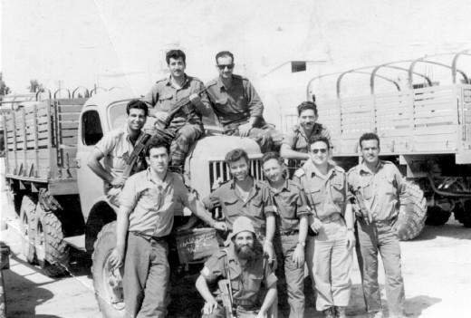

The Six Day War - Personal Accounts of Chassidim in Battle
The threat was existential; the military chiefs issued a general mobilization order to whoever could hold a weapon. Hundreds of Lubavitcher Chassidim were drafted to fight the Arab enemies. * Menachem Ziegelboim met with three Chasidim who served in the army in those frightening days: Rabbi Meir Brand, Rabbi Zushe Gross, and Rabbi Dovid Lesselbaum. They take us back to the war and the unforgettable glorious, miraculous victory, and the return of the holy sites.

The engines of mighty tanks roared as they lurched forward. The camouflage nets were folded up, armor corps soldiers headed for their tanks and began to file towards the enemy. Combat planes were quickly launched and flew over the planes of the enemy behind their lines. The decision had been made to go all out to fight the enemy who taunted and threatened, before the entire world, to smash through his lines and to crush him until he would understand that the Jewish people were no longer to be seen as sheep brought to the slaughter.
On 26 Iyar, 5767/1967, at 7:45 in the morning, the Israeli air force set out on Operation Focus (Mivtza Moked), in which they attacked Egyptian air bases, completely taking them by surprise. A short while later, the IDF officially announced, “From the early morning hours, heavy fighting has been ongoing on the southern front between the Egyptian air force and armored forces which were moving toward Israel, and our forces which set out to stop them. The Israeli planes set out to meet the Egyptian planes and air battles commenced.”
Israelis were more scared than ever. Nobody deluded themselves; a serious war had ensued and who knew how it would end?
The signal was given to the ground forces as well, and the tanks of the division under the command of Yisroel Tal (Talik) swarmed the northern Sinai, along with the Gaza Strip and the Coastal Axis. In the center area of the Sinai, the division under the command of Arik Sharon did battle, while another division, commanded by Avrohom Yaffe, penetrated deep into Sinai in the space between the other two divisions, an area which was difficult terrain. The Egyptians had deployed in advance a force of 100,000 soldiers, based in the Rafiach and Abu-Agila sectors, which included infantry and armored divisions.
The other Arab armies did not sit idly by as they boasted of “glowing victories” against Israel. Syria in the north and Egypt in the south began to bombard Israeli cities with heavy shelling. Only in Yerushalayim was there a tense silence, but not many hours passed and Hussein, King of Jordan, who got news of “big victories,” rushed to join the “festivities” in order to be part of the dizzying success. Jordanian soldiers began shelling the residents of Yerushalayim without mercy. Civilians rushed into bomb shelters.
War had begun and it was almost possible to touch the tension on the streets of Eretz Yisroel.
UNCLEAR REPORTS FROM ERETZ YISROEL TO 770
The reverberations of war reached 770 and the news was confusing. Arab propaganda fired up the masses with great victories against Israel. Rabbi Binyamin Bernstein was a bachur in the yeshiva and he remembers those days:
“With the outbreak of war, I received a letter from my family in Eretz Yisroel in which they told me what was going on. In addition, one of my aunts sent a letter with a real-time description of what was going on. She wrote the letter in a bomb shelter where some of my cousins were also camped out. She said that while writing the letter, they heard the terrible shelling outside and she was keeping tabs on her nerves, to see how long they would stand up.
“The general atmosphere in Beis Chayeinu was pained. Israeli students were afraid for their families’ welfare in Eretz Yisroel and the reports coming from Israel said that the entire country was up in flames. Since everyone wanted to be updated, a resident of Crown Heights brought a radio to 770, something out of the question in ordinary times, so that the talmidim could listen to what was going on.
“During the first days of the war, only hazy news reports arrived. One day, there was false information that said the Jordanians had conquered all of northern Yerushalayim, where the religious neighborhoods are concentrated. The hanhala of the yeshiva were understanding of what the talmidim were going through and was less stringent.”
Rabbi Lipa Kurtzweil, also a talmid then in 770, remembers those days, “The first morning of the war, we were on our way to the mikva near 770 when we heard people on the street saying that a war had broken out in Eretz Yisroel. In the first days of the war, nobody knew what was going on. News from Eretz Yisroel was imprecise and vague. They spoke about the entire country being bombarded. I remember a Lubavitcher standing in 770 and screaming in panic that the entire country was up in flames from the bombardment. I have no words to describe the atmosphere of fear in Crown Heights. People were glued to their radios and trying to understand what was happening.
“Despite this, the learning in 770 was not affected. All the talmidim tried to continue learning as usual. The time between s’darim was used to say T’hillim for those dwelling in the Holy Land.
“You need to remember that the first days of the war were difficult ones for our forces. Not only were people abroad in the dark; residents of Eretz Yisroel did not know what was going on either, because of the policy of silence that Ezer Weitzman instituted. I particularly remember the fear of the Yerushalmi students whose families lived on the front lines.”
With the outbreak of war, the Rebbe sent a letter to the mother of a kalla who was about to be married in Eretz Yisroel: “In response to your telegram, obviously not to change plans and to make the wedding on time in our holy land where Hashem commands His blessing from now and forever. May the match work out well.”
HAR HABAYIT B’YADEINU – THE TEMPLE MOUNT IS IN OUR HANDS
From the first hours, Israeli soldiers saw the hand of G-d accompanying them in their holy mission of defending the Jewish people. Within a few hours, air force pilots announced that nearly the entire Egyptian air force had been decimated on the ground and much damage was caused to their bases and runways. Altogether, in the air force’s first attack, they destroyed 350 Arab combat planes and took control of the air for the duration of the war. They ultimately destroyed 451 enemy planes as compared to just 46 Israeli planes.
On the first day of the war, the IDF garnered big victories in Sinai. The forces of Talik reached El-Arish and conquered Gaza, while Sharon’s division, in a move that appears to be the decisive factor in the war, encircled the main force of the Egyptians in the Abu-Agila and Umm Katef region. Concurrently, the Yaffe division pushed forward and attacked the Egyptians deep behind the lines.
On the fourth day of the war, 29 Iyar, forces reached the Suez Canal. Paratrooper forces landed in Sharm-al-sheik, the navy took control of the Tiran Straits, Yaffe overtook the Mitla Pass and the Gidi Pass, and turned them into death traps for the Egyptian armored forces that tried to escape toward the Canal. By the end of the day of 29 Iyar, the entire Sinai Peninsula was in the hands of the IDF.
The most emotionally charged sector in the war was definitely the Jordanian front. Although most of their air power was destroyed on the first day of the war, the Jordanians were well-trained on the ground and were augmented by Iraqi forces. Jordanian soldiers opened fire against Yerushalayim and on settlements in the Sharon region and Jordan Valley. The leaders of the government, who had assumed that Hussein would not dare to join the leaders of neighboring countries, were proven wrong. The IDF received permission to conquer Yerushalayim and all of Yehuda-Shomron.
The Jerusalem brigade was the first to score a victory when it conquered the Armon HaNetziv campus in East Jerusalem and from there, continued on to conquer Beit Lechem. The Harel brigade overtook the ridge that controls the Tel Aviv-Jerusalem highway and conquered Nabi Samuel and Radar Hill (Givat HaRadar).
At the same time, another division of the Northern Command attacked the West Bank and advanced toward Jenin.
The fighting on the Jordanian front continued nonstop. A paratrooper brigade was given the assignment to break through the Jordanian lines in northern Yerushalayim and it set out in its intended mission, which turned out to be the most difficult battle of the war.
After the bitter and difficult battle for Ammunition Hill, the Jerusalem brigade and the paratrooper brigade were assigned to conquer the Old City of Yerushalayim. The Jerusalem brigade entered the city via the Dung Gate, conquered the eastern section and advanced toward Chevron and Beit Lechem, while the paratrooper brigade led by Motta Gur, broke through the Lions’ Gate into the city and waged a mighty battle.
After a few hours, the emotional words could be heard on the army radio channel: “Har HaBayit is in our hands.” Shortly after that, the paratroopers continued to advance and reached the Kosel where, after many years, the sound of a shofar could be heard, blown by the chief chaplain of the IDF, Shlomo Goren.
The IDF did not focus solely on the Yerushalayim area. Gush Etzion was liberated and one after another so were Ramallah, Chevron, Beit Lechem, Tul Karem, Qalqilya and Shechem, all cities saturated with Jewish history since the time of Avrohom Avinu, the cradle of the Jewish nation.
MIRACLES ON THE NORTHERN FRONT TOO
Now, the IDF had only the Syrian front left to contend with. Despite a massive artillery attack on yishuvim at the foot of the Golan Heights, whose residents spent the duration of the war in bomb shelters, the IDF hesitated to attack Syria. The head of the regional council of the Upper Galil, Yaakov Eshkoli, tried to pressure Prime Minister Eshkol. He said, “Why are the Syrians like a cat, always landing on its feet? We must finish them off once and for all; otherwise, we will lose the yishuvim.”
Eshkoli’s pressure worked and the IDF received orders to conquer the Golan Heights. The Syrians had about 50,000 soldiers in the area and a large quantity of tanks and artillery cannon. The IDF went up against them with an armored division under the command of Dovid Elazar (Dado).
The IDF scaled the heights under terrible conditions. Despite the heavy fire, they were able to break through the Syrian lines in a number of places simultaneously. The most difficult battle occurred in Tel Faher, but it too, was ultimately captured. At the end of a day of fighting, the Syrian forces were split and separated by a distance of 30 kilometers, and the IDF controlled the Golan Heights, all the way till the Chermon foothills and the entire eastern coast of the Kinneret.
DESPITE THE MIRACLES, THE REBBE WAS VERY GRAVE
Back to Beis Chayeinu with a report from Rabbi Binyamin Bernstein:
“An interesting episode that I recall from that time occurred in the middle of Shavuos, right after the victory. Two talmidim who learned in 770, whose families lived in Shikkun Chabad in Yerushalayim, received letters from their families in which they told of victories in the war. I don’t remember how the letters were opened on Yom Tov (apparently, by the gentile who brought the mail), but the secretary, Rabbi Leibel Groner, asked for one of the letters to submit it to the Rebbe.
“The parents described everything that happened with the Chabad community in Yerushalayim during the war, since Shikkun Chabad, at that time, was right on the border with Jordan and sustained direct hits.
“In one of the sichos that the Rebbe said at that time, he even quoted the verse, ‘this was from G-d.’ This verse was written in one of the letters that were sent to the T’mimim and the letter was submitted to the Rebbe. The Rebbe noted that this verse is written about big victories.
“Later on, I also received a letter from my parents in which my mother wrote that what was happening in our house was indescribable. As I said, our home was not far from the Old City of Yerushalayim. In all the letters, they wrote that in Yerushalayim there was a feeling of uncertainty, with nobody knowing what was really happening. They said that the Chassid, R’ Lazer Nannes, who had made aliya from Russia, sat in one of the bomb shelters that was crowded with families of Chassidim, and held a big ax with which he could attack the first Arab who broke into the shelter.”
R’ Lipa Kurtzweil adds:
“When the news reports first began to clear up, they spoke about exceedingly great victories. Obviously, we, as talmidei ha’T’mimim, tensely followed the Rebbe’s conduct. The Rebbe was very grave at that time, which taught us that despite the triumphs, these were not simple days for the Jewish people and one needed to relate to the situation with seriousness.”
Mr. Shazar, as is well known, cut short a state visit to Canada, and returned in a panic to his home in Yerushalayim. A few days later, he received a letter from the Rebbe, dated Erev Rosh Chodesh Sivan, which the Rebbe began with: “I was happy to be informed now that your home was not damaged by the shelling etc., and therefore, I very much hope, that all the more so, that you and your entire family are all whole.”
SHLIACH OF THE REBBE WELCOMED IN YERUSHALAYIM
The unbelievable came to pass, and the Six Day War, as it later became known, went down in history as a miraculous rescue of the Jewish inhabitants of the Holy Land. The wondrous victory, unparalleled in history, became a fact of life. Eretz Yisroel, not only did not lose ground in the war; its army conquered large swaths of land from her enemies. The list includes: the Golan Heights, Gaza, the entire Sinai Desert all the way to the Suez Canal, and especially the holy sites: the holy city of Yerushalayim, the holy city of Chevron, Kever Rochel, and other holy sites.
During the brief war, the Arab armies suffered tremendous casualties: 15,000 dead or wounded, and 6,000 soldiers taken captive. Prime Minister Eshkol issued a somewhat cautious statement at the conclusion of the war, saying, “The Six Day War was a pivotal moment for Israel. We did not want war, and we did all that was in our power to prevent it. When it was forced upon us, we were ready, and we fought for our very lives in this land.”
The Jewish people raised up its head with pride and joy. High spirits and spiritual awakening gripped every demographic in the country, with an intensity that had not been for many generations. Many were inspired to come closer to G-d, and to accept upon themselves a life of Torah and mitzvos. Tens of thousands flooded the holy sites which had been blocked off for many years and offered up prayers of thanksgiving before the One Above.
Less than one month later, a gathering of thanksgiving was held in one of the large squares of Yerushalayim, at which all of the Torah and spiritual leaders of the Holy City were present. An emotional moment during the event was when R’ Yosef Wineberg arrived. This was because he was the one who had merited to be the emissary of the Rebbe, to convey the message of assurance of great victories to the Jews of Eretz Yisroel during the days of fear and terror, by publicizing the message that the Rebbe had given well in advance of the actual outbreak of hostilities, on the day that is known to be a day of salvation, Lag B’Omer.
“AT EL-ARISH, THE SH’CHINA WAS BELOW TEN HANDBREADTHS”
By Rabbi Zushe Gross
When the Six Day War broke out, I was living in Kfar Chabad. About two weeks before the war, I was drafted on Shabbos. It was a few minutes after kiddush on Friday night. I made kiddush and began eating the Shabbos meal when they knocked at the door to inform me of a general call-up. I did not know whether it was permissible for me to take my tefillin (which are muktza). I asked them to wait a little bit and ran to the rav of Kfar Chabad, Rabbi Shneur Zalman Garelik a”h, to ask him. He paskened that I should not take my tefillin on Shabbos. I left home with a bad feeling. Everyone came out to see what was going on. The neighbors went out to escort me and the other draftees until the vocational school. I did not want to board the military vehicle while still in Kfar Chabad.
We spent the two weeks before the war, the days of preparation, at Kibbutz Nachal Oz. Those were tough weeks; a very tense waiting period without knowing what was going to occur. A letter arrived from the Rebbe that was sent to every IDF soldier. The opening words of the letter were, “They merited that they are among tens of thousands of Jews in the Holy Land, with the eyes of Hashem upon it constantly, and surely, surely, the Guardian of Israel neither slumbers nor sleeps. Hashem is at your right side; Hashem will protect them and all Jews, from now and forever.”
The Rebbe’s encouragement at that time encouraged me tremendously. The Rebbe said not to fear and not to frighten others, although the situation in Eretz Yisroel was of people walking around in terrible fear. In fact, this fear lent greater impact to what the Rebbe said. Everyone asked, “So, what does the Rebbe say?” They all wanted to know what the Lubavitcher Rebbe says.
There was a tremendous spiritual awakening. I remember that in the midst of the war, an officer suddenly arrived, a dyed in the wool kibbutznik and asked me for a kippa. I asked him what happened. After putting on the kippa, he told us that the Kosel had been liberated. He was very far from Torah and mitzva observance; but the miracles and wonders moved everyone.
I won’t forget how before the war, I stood in the trenches in Kibbutz Nachal Oz. At 7:50 the morning of 26 Iyar, the shelling began. They fell directly into the barn on the kibbutz. A black cloud of smoke billowed over the kibbutz; you couldn’t tell if it was day or night. The surrounding fields began to burn. I stood in a ditch together with a Reservist named Adler who worked for Amcor. He was a recent immigrant and he said to me in Yiddish, “Where are your boxes?” referring to my tefillin.
I told him they were inside the army rucksack on my back. Of course, I helped him put on tefillin. Then I heard him daven a truly pure prayer in Yiddish, which I will never forget. He turned to Hashem with simple words from the heart: “What do You want from me? I am a sole survivor of the Holocaust. I married and have a one-year old daughter named Bracha’le. Who will raise her? How will there be a remembrance of my family who all perished in the Holocaust?” As he prayed, the officer ran over to us and yelled to board the trucks. While in the truck, they all came over to me and asked to say Shma Yisroel. They warmly kissed the tefillin. The unusual spiritual awakening was palpable.
After the war, I wrote a detailed report to the Rebbe, five full pages, of what I experienced in the war.
The Rebbe responded with, “Many thanks, many thanks, for the report.” In parentheses he added, “albeit very brief.” Afterward, someone told me that the Rebbe said about the Six Day War, “At El-Arish, the Sh’china was below ten handbreadths.”
I REMEMBER THE ARABS RUNNING AWAY FROM ME
By Rabbi Dovid Lesselbaum
I was drafted about two weeks before the war. I was a young married man, a resident of Kfar Chabad, who worked in chinuch. I was drafted into a unit in the 81st regiment of infantry soldiers. In this regiment, there were four other Lubavitcher Chassidim.
The children and men who remained in Kfar Chabad rushed to dig ditches to hide in, near the houses. Near my house lived a Yemenite Jew who helped my family dig ditches. The children were terrified. I remember that forty days after the war, when I received my first furlough, I went home and my son did not want to leave me.
My regiment set up Kibbutz Magen opposite the Gaza Strip. During that time, we got the news that the Rebbe initiated Mivtza Tefillin. I realized that if the Rebbe started this new campaign before the outbreak of war, it had a direct connection with the course of the war. I wondered how to carry out the Rebbe’s instructions. Then, unlike today, it was not a common thing to stop a Jew on the street and offer tefillin.
After two days of indecision, I got up my courage. I took my tefillin and went to the regimental club where soldiers convened in their free time. Even before I had taken them out, there was a long line of soldiers waiting to put them on. For me, it was another proof that if the Rebbe asked for something, it had to be carried out as is.
We did not have the means to communicate, as we have today, so we did not know what was going on at the other fronts. The only information we got was from media in Europe that quoted Arab propaganda, proclaiming great victories for Arab forces. The worry, as I already said, was for the family at home. A soldier who was home and returned to duty increased our worry when he said that all over the country there was heavy darkness and dust everywhere.
It was a Monday when we left for Khan-Yunis, in the Gaza Strip. Ariel Sharon and his armored division had conquered the area a few hours earlier and continued in the direction of the Suez Canal. We were supposed to stabilize the situation and overrun the last nests of opposition. After hours of fighting, we completed the conquest of the city, and every squad in the regiment set up a command post in a different section. The victory was quick and complete, like in a dream.
It is hard to describe the tremendous excitement when we were told about the conquering of the Old City and the Kosel. I was standing on the roof of the Arab school with the telegraphy comm-panel, and with me there were two other combat soldiers whose job it was to protect me. One of the soldiers had a small transistor radio and he tried to tune into a certain radio station in order to understand what was going on. Suddenly, he managed to pick up a certain wavelength from which we heard the singing of “Yerushalayim shel Zahav.” We could also hear the sound of a shofar and the chief chaplain, Rabbi Shlomo Goren, reciting the SheHechiyanu blessing. Then we heard voices saying, “HaKosel b’yadeinu.”
Even if I wanted to, it would be very hard to describe the intense quiver of emotion that ran through my whole body. Tears of joy wet the cheeks of the soldiers there.
The Arabs were tremendously afraid. There was a feeling of “gaon Yaakov.” I would ride a bicycle in the streets of Khan-Yunis, as residents fled in terror from me. What a pity that they did not preserve this atmosphere and who knows how many soldiers and civilians would be alive with us today, and not murdered in attacks and wars, if they had only listened to the Rebbe and did not kowtow to them.
WE WON WITHOUT FIRING A SHOT
By Rabbi Meir Brand
During the Six Day War, I was already part of the Veterans Corps. These were veteran soldiers who had fought in 1948. The job assigned to the division was to follow quickly behind the conquering forces and to set up bases in the conquered territory in order to impose order and military rule, thus enabling the younger soldiers to continue conquering.
During the waiting period before the war, the leaders of the military were under tremendous pressure. They drafted anyone who could fight. I got my draft order on the Friday before Lag B’Omer.
After we were armed, if you could call the equipment and weapons they provided us with as such, the section commander called me in for a talk. He explained to me that the army was concentrating most of its forces against Egypt in the Sinai and the Gaza Strip area. As for Jordan, it was unclear whether it would join the war or not, so it was decided to spread our brigade all along the line with Jordan. It sounded ludicrous; that our brigade would suddenly become the first line of defense to stop a tank division, but the situation led to decisions made out of a lack of options. The commander asked me to take a command position since I was the youngest. Thus, in a moment, I was appointed as a group commander and assistant in command to the section commander.
On 21 Iyar, we fully set up along our line. These were entrenched positions with connecting trenches between them. In one of every few positions, there was a machine gun, and opposite my position there was also an artillery piece under the command of the Artillery Corps. Below, behind us, was the command post, and that is where they set up the “heavy weapons” that included some mortars. That is how we stood facing a powerful enemy on high alert, with minimal anti-tank weaponry. The fear was so great that when I went out one day to daven, the officer yelled that my tallis looked like a white flag to the Jordanians.
On Monday, 26 Iyar, the section commander had to leave and I remained to oversee the entire section. In the afternoon, we suddenly noticed that all the Arab farmers who worked in the valley facing us, had disappeared. The silence that suddenly descended on the valley frightened us more than anything. It was obvious that something was about to happen.
At two in the afternoon, the Jordanian shelling began. It was a signal that Jordan had entered the war. For about four hours, the Jordanians shelled us mercilessly. Fire and smoke filled the air. The thistles began to burn and the smoke prevented us from seeing what was happening. We buried our heads deep into the sandbags and just prayed. As a commander, I had to run between the positions and make sure everything was okay. It was terrible. Every shell shook the area and our hearts. The positions were not strong at all so that a nearly direct hit could kill us all. We knew that we could do nothing against them. Considering all this, you can understand how big the miracles were! Not a single shell fell on the right place.
We did not know what was happening on other fronts. It was only after the war that we learned that the next day a massive attack began on Yerushalayim. The Jordanians, who already knew what happened, were afraid to attack us and so for a while there was a terrible silence. On Thursday, 29 Iyar, Moshe Dayan came to visit the line. The surprise was that he wasn’t coming from Beer Sheva, as expected, but from Chevron. That is when we found out that the entire area had been conquered, including Chevron.
The war was over. On Monday, 2 Sivan, we held a victory march in Chevron. Being the only religious person, I got the honor to be the first to enter the Meoras HaMachpeila.
That is how the war ended without our firing a single bullet and without any casualties.
Menachem Ziegelboim. "The Six Day War - Personal Accounts of Chassidim in Battle." Beis Moshiach, no. 1116 (May 3, 2018).